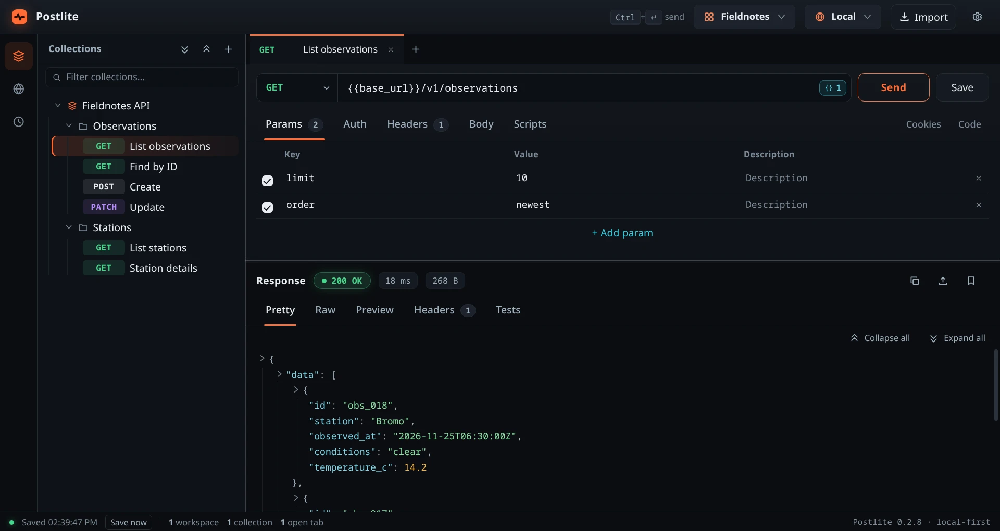

Full HTTP core
Every standard verb plus QUERY, URL query params, headers, and bodies — none, raw, or form-data with text and file rows. Path variables like :product_slug get their own table.
GETPOSTPUTPATCHDELETEQUERY
Local-first desktop API client
Send requests, inspect responses, and keep your collections, environments, and tests together on your machine.

Install Postlite and start with any API. You can follow the full setup in the installation guide.
Grab an installer or a portable binary from the releases page, or build from source with the Rust toolchain. CI ships Windows and Ubuntu builds on every release.
# or build it yourself
cd src-tauri
cargo tauri buildPick a verb, paste a URL, add params, headers, or a body — then hit Ctrl+Enter. Status, latency, size and a highlighted JSON body come back in one panel.
Ctrl+S saves the request into a collection. Organize with nested folders, bind environments, and reuse {{token}} variables everywhere.
Build a request, save it to a collection, and run it again against a different environment.
Every standard verb plus QUERY, URL query params, headers, and bodies — none, raw, or form-data with text and file rows. Path variables like :product_slug get their own table.
Nested folders, a filterable tree, drag-to-reorder with Alt+Up/Down, and multiple workspaces with their own collections, environments, and open tabs.
{{token}} interpolation across collection, environment, and folder scopes with defined precedence. A peek overlay names the scope each token resolved from.
Set Basic, Bearer, API key, or OAuth 2.0 authentication at the request, folder, or collection level. Children inherit automatically, so one collection credential covers every request in it.
Run scripts in a minimal pm sandbox: chain login responses into environment variables and assert on results in the Tests tab.
Right-click a collection or folder, pick requests in a checkbox tree, and run them in order through the exact Send pipeline. Live progress, a Stop button, per-request results.
Import and export Collection v2.1 and Environment JSON — descriptions, file fields, path variables and saved examples survive the round-trip. Drag files anywhere to import.
Copy any request as runnable cURL, generate fetch / axios, PHP, Python, or Go snippets with variables resolved — or paste a cURL command and get a request tab back.
A persistent cookie jar per workspace, AES-256-GCM encrypted with the key in your OS secret store. A full Cookie Manager drawer with per-row reveal and delete.
Every request can carry pre-request and test scripts. Use the sandboxed pm API to check results and pass values to the next request.
// Test script — persist the login token
const body = pm.response.json();
pm.test("status ok", () => {
pm.expect(pm.response.code).to.equal(200);
});
pm.environment.set("token", body.data.token);pm.requestread the outgoing requestpm.responsecode, headers, body, json()pm.environmentbound environment, persistspm.collectionVariablescollection's own scopepm.variablessession-only valuesThe bundled postlite-mcp server exposes your saved collections to any MCP client — an agent can list requests, read their effective variables and auth, and send them through the same pipeline the app uses. workspace.json is only ever read, never modified.
send_http_request for requests you haven't saved// add to your MCP client config
{
"mcpServers": {
"postlite": {
"command": "node",
"args": ["<repo>/mcp/server.js"]
}
}
}Full setup and tool reference: docs → MCP server
| Tool | What it does |
|---|---|
| list_workspaces | Workspaces with collection and environment counts |
| list_collections | The folder / request tree of a workspace |
| get_request | A saved request with effective variables and resolved auth |
| list_environments | Environments and their variables |
| send_request | Send a saved request through the app's pipeline |
| send_http_request | Send an ad-hoc request with the app's HTTP settings |
Postlite saves your workspace as a JSON file on disk. Persistent cookies use encryption, and your operating system’s secret store protects credentials such as proxy passwords.
Authorization, Cookie, token/secret/key headers and secret variables are masked in the UIworkspace.json or backups| OS | Workspace file |
|---|---|
| Windows | %APPDATA%\app.postlite.desktop\workspace.json |
| macOS | ~/Library/Application Support/app.postlite.desktop/workspace.json |
| Linux | ~/.local/share/app.postlite.desktop/workspace.json |
Plain JSON, easy to back up or move between machines. One-click Export / Import writes the whole state to a single .postlite.backup file.
A native window with system WebView — no Electron, no Chromium runtime bundled per install.
reqwest for HTTP, cookie_store for the jar, aes-gcm + keyring for secrets, serde for the workspace file.
HTML / CSS / JS in one static folder, embedded at build time. No bundler, no framework, no npm dependencies.
A CDP harness drives the real app: checks across settings, cookies, proxy routing, drag & drop, and the runner.
Download a build or run it from source.